Saumavél
Ólöf vann að verkefni í Fab Academy og prófaði sig áfram með ,,Extension" í Inskscape sem kallast Inkstitch. Hún teiknaði mynd af hákarli og prófaði sig áfram með þá teikningu. Hún notaði einnig logo til að sjá hvernig hægt væri að nota ,,Offset" svo útlína væri ekki saumuð yfir fyllingu. Hér eru útskýringar á verkferlinu.
Brother 6-nála útsaumsvél
Bæklingur og leiðbeiningar
Bæklingur fyrir Brother 6-nála útsaumsvél
Fab Lab Húsavík á Brother 6-6-nála útsaumsvél. Hér er bæklingur fyrir Brother 6-6-nála útsaumsvélina.
Dropi af olíu áður en unnið er með vélina
Það er mikilvægt að setja dropa af olíu á krókinn áður en neðri tvinninn er settur í. Þetta borgar sig að gera einu sinni á dag þá daga sem á að vinna með vélina, þ.e. áður en verkið hefst.
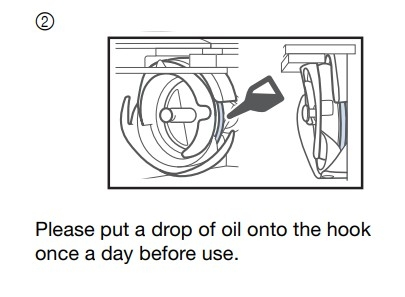
Niðurhal og leiðbeiningar
Hægt er að sækja Inkstitch extension hér.
Hér má finna fleiri upplýsingar og leiðbeiningar um vélina.
Að útbúa mynd fyrir saumavélina
Að útbúa mynd fyrir saumavélina
Byrjaðu á að opna Inkscape. Fylgdu svo leiðbeiningunum hér í bók eftir Hafey Hallgrímsdóttur um hvernig eigi að búa til límmiða (fyrsta verkefnið í bókinni). Fylgdu öllum leiðbeiningum þar til þú hefur búið til vektor teikningu.
Ég notaði pennateikningu sem ég gerði en það er líka hægt að nota myndir af netinu.
Næst smellir þú á Hlutur og svo Fylling og útlína, kveiktu á Fyllingu og slökktu á Lit útlínu.
Þú getur valið liti hér en þú munt svo stilla litina endanlega í útsaumsvélinni.
Smelltu á Skrá og Skráareiginleikar. Þar smellir þú á lítinn hnapp merktan Aðlaga stærð að innihaldi.

Búið að aðlaga stærð að innihaldi
Eftir að stærðin hefur verið aðlöguð að innihaldi sést að blaðsíðan passar akkúrat utan um verkefnið.

Að skoða stillingar í params
Ef þú smellir á Extensions, Ink/Stitch, Params getur þú skoðað stillingarnar fyrir útsauminn.
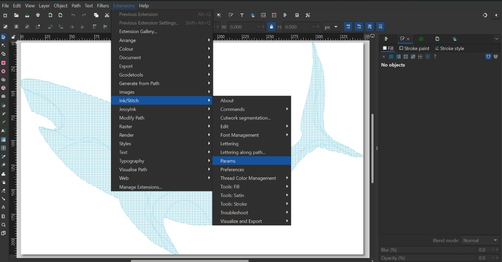
Stillingar og forskoðun í params
Í params er meðal annars að finna forskoðun á útsaumsverkinu. Það spilast eins og myndband svo það sést hvernig útsaumurinn fer fram. Þarna er líka hægt að breyta ýmsum stillingum.
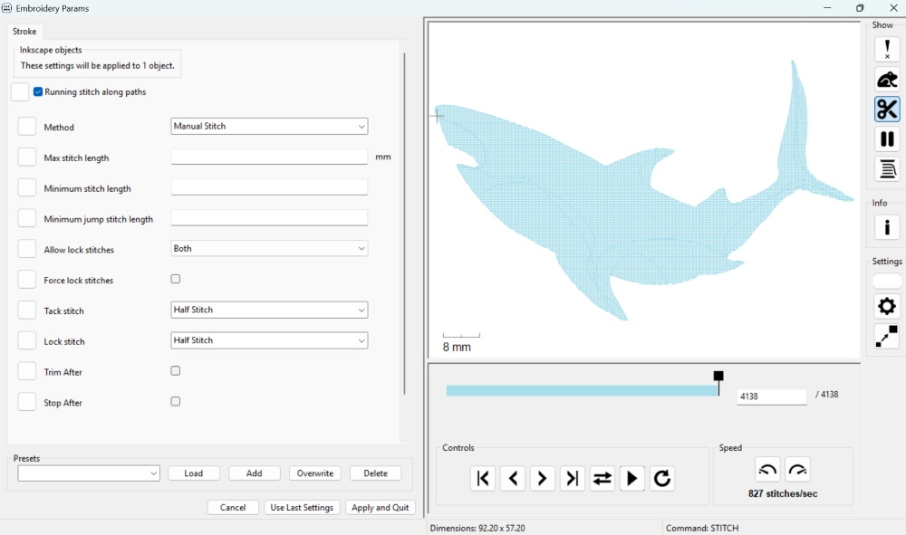
.pes skrá býr til feril fyrir saumavél
Á myndinni hér fyrir neðan sést hvernig .pes hefur búið til feril fyrir útsaumsvélina. Þarna sést hvernig tvinninn verður lagður niður.
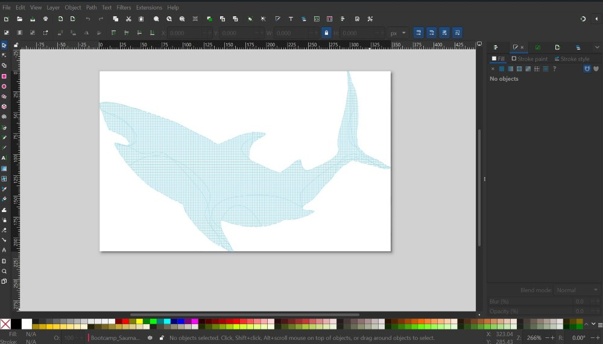
Að búa til útlínumynd
Að búa til útlínumynd fyrir útsaumsvélina
Ef þú vilt búa til útlínumynd getur þú fylgt leiðbeiningunum hér í bókinni eftir Hafey Hallgrímsdóttur um hvernig eigi að búa til límmiða en þegar þú hefur smellt á Hlutur og Fylling og útlína, slökkt á Fylling og kveikt á Litur útlínu....þá, í stað þess að stilla Stíll útlínu á 0.02 gerir þú línuna þykkari. Það er gott a miða við að hafa línuna að lágmarki 1.5. Svo getur þú valið lit á línuna en þær stillingar eru svo endanlega gerðar í útsaumsvélinni síðar.

Að nota Convert line to Satin
Næsta skref er að smella á Extensions, Ink/Stitch, Tools: satin og svo Convert line to satin.

að vista sem .pes file
Næst er skráin vistuð sem .svg skrá. Þessa skrá er hægt að nota síðar ef það reynist þörf á að breyta hönuninni. Svo er skráin vistuð sem .pes file.

.pes skrá býr til útsaumsferilinn
Á myndinni hér fyrir neðans sést hvernig .pes skráin bjó til feril fyrir þetta verkefni. Þráðurinn sést vel.

Að festa efnið á ramma
Að festa efnið
Margnota taupoki var notaður í þetta verkefni. Efnið var fest í sérstakan útsaumsramma. Innri hluti útsaumsrammans var lagður innan í taupokann. Svo var bútur af stuðningsefni lagður ofan á rammann, semsagt einnig inni í pokanum. Það er mikilvægt að búturinn af stuðningsefninu sé nógu stór til að geta fallið á milli innri rammans og ytri rammans. Eftir að búið er að stilla af staðsetninguna á innri rammanum+stuðningsefninu er ytri ramminn lagður ofan á efnið og honum þrýst niður þannig að hann falli utan um innri rammann sem er hinum megin við efnið. Svo er skrúfan hert til að halda efninu á sínum stað. Þess er gætt að efnið sé nógu vel strekkt til að hægt sé að banka létt á efnið eins og trommu.
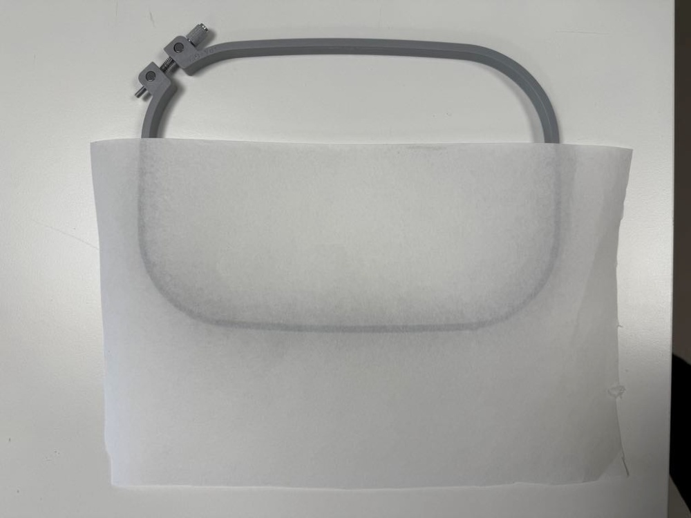
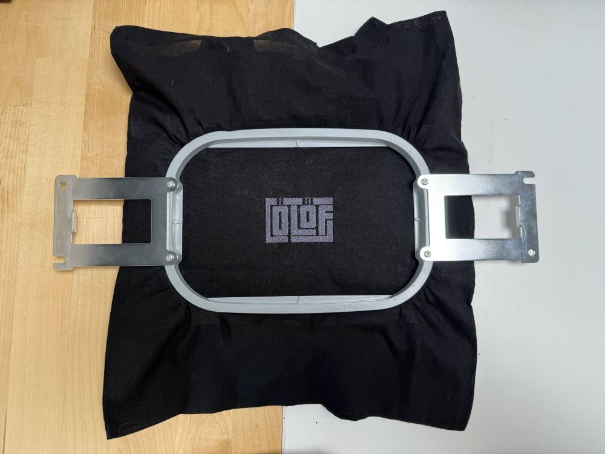
Röðun á lögum ræður röðun á útsaumi
Þegar unnið er með fleiri en einn litaflöt og línur í Inkscape verða til nokkur lög (e. layers) í Inkscape. Það er hægt að stýra því á hvaða litafleti vélin byrjar. Vélin byrjar ávallt á því lagi sem er neðst á listanum í Inkscape og fylgir svo lögunum uppávið. Þetta þýðir að þú getur breytt röðun laganna ef það skiptir máli í hvaða röð saumað er. Dragðu bara lögin til þar til röðunin er eins og óskað er eftir.
Að nota Offset
Að nota Offset
Þegar ég byrjaði að skrá þetta niður mundi ég ekki hvernig ætti að hópa bókstafi saman á réttan hátt til að geta notað svokallað Dynamic offset. Ég fann svar frá einstaklingi, Lazur að nafni, við spurningu á Inkscape forum. Svarið er annað í röðinni ofan frá.
Lazur segir að það sé hægt að nota flýtileiðir. Eftirfarandi skrefum er fylgt:
-
Ýttu á Shift+Ctrl+C til að breyta texta í feril
-
Ýttu á Shift+Ctrl+G til að ferlarnir verði saman í hópi
-
Ýttu á Ctrl+K til að sameina ferla
Sérðu pínulitla, bláa demantinn/tígulinn ofarlega í hönnuninni á myndinni hér fyrir neðan? Nú er hægt að grípa hann og draga hann til þannig að hönnunin minnki öll eða stækki (offset).
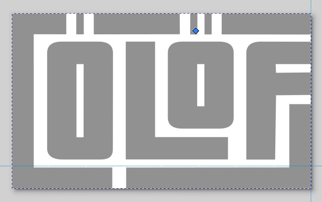
Flýtileiðir í Inkscape
Flýtileiðir í Inkscape
Hér er að finna lista yfir allar flýtileiðir í Inkscape.
Að jafna og dreifa
Að jafna og dreifa
Ýttu á Shift+Ctrl+G til að ná öllum útlínuformunum saman í hóp. Veldu svo öll form í skjalinu með því að vinstrismella á músina og draga hana yfir allt. Svo er smellt á Hlutur og svo Jafna og dreifa.
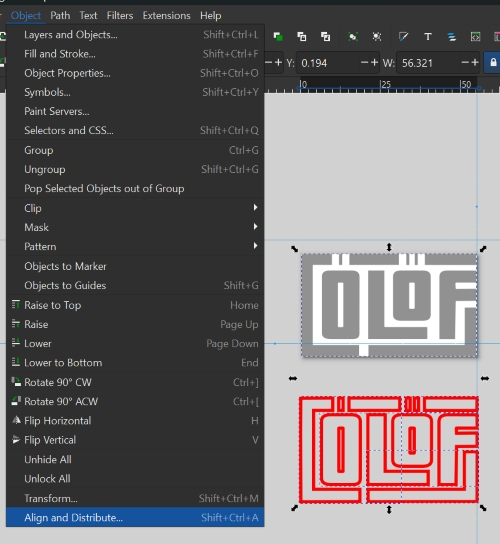
Jöfnun og dreifing framkvæmd
Svo er smellt á táknin fyrir það að jafna á x-ás og y-ás. Þá er búið að staðsetja þau jafnt saman.
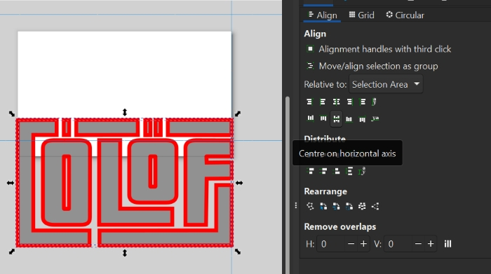
Útsaumur tilbúinn
Útsaumur tilbúinn
Svona leit verkefnið út eftir að vélin saumaði það út. Athugið að það er hægt að nota misþykkar útlínur í svona verkefnum, allt eftir smekk hvers og eins.
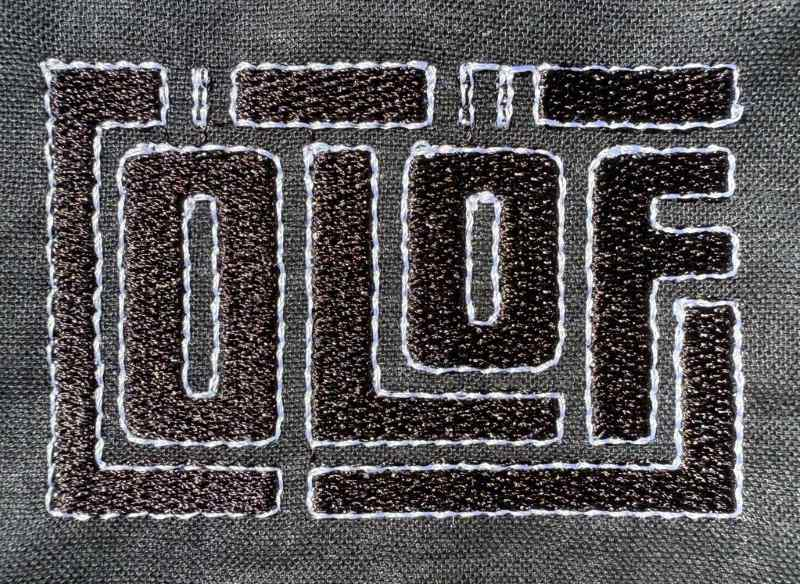
English
Ólöf experimented with her fabacademy project with the embdoidery machine and learned about inkstitch. She prepared a Logo which was stitched 3 times with 3 different settings regarding outline, pattern fill and colour swatches. Here are directions on how to prepare a file for embroidering.
Brother 6-needle embroidery machine
Brochure, directions and download
Brochure for Brother 6-needle embroidery machine
Fab Lab Húsavík has a Brother 6-needle embroidery machine. Here is the brochure for the Brother 6-needle embroidery machine.
A drop of oil before each use
It is important to put a drop of oil onto the hook before inserting the bobbin case. This has to be done each day that the machine will be used.
Download and instructions
The Inkstitch extension can be downloaded from here.
Here you can find instructions on how to use the machine.
A design created for the embroidery machine
Creating a image for the embroidery machine
To begin with you open the Inkscape program. Then you can follow the directions here in a book by Hafey Hallgrímsdóttir on how to create a sticker (the first project in the book). You follow all steps until you have converted an image to a vector drawing.
I used a pen drawing that I made but you can also use images from the internet.
Next you click on Object and then Fill and stroke, turn Fill on and turn off Stroke paint.
You can either choose a colour for the image there or later, in the embroidery machine.
Click on File and Document properties. Then you can see a small button for resizing the page to content.
Resizing to content
Now you can see that the page fits around your design.
Params
Looking into params
If you click on Extensions, Ink/Stitch, Params you can look into the settings for the embroidery.
Settings and preview params
In params you can see a preview of the path that will be embroidered. You can also adjust settings.
Saving as a .pes file
A .pes file generates the sewing path
In the image below you can see how the .pes file has generated a path for the embroidery machine. You can see how the thread will be laid down.
Image with only lines
Creating a image for the embroidery machine
If you want to design an image where you are only using lines, you can follow the directions here in the book by Hafey Hallgrímsdóttir on how to create a sticker but when you have clicked on Object and then Fill and stroke, turned Fill off and turned on Stroke paint....then instead of setting the stroke style to 0.02 you make the line thicker, f.ex. 1.5. That is the minimal thickness but the line can be thicker. Then you can either choose a colour for the image there or later, in the embroidery machine.
Converting line to satin
The next step is to click on Extensions, Ink/Stitch, Tools: satin and then Convert line to satin.
Saving as a .pes file
The next step is to save the file as a .pes file. You can choose any colour for the fill in the file and then you can change the colours when adjusting settings in the embroidery machine.
A .pes file generates the sewing path
In the image below you can see how the .pes file has generated a path for the embroidery machine. You can see how the thread will be laid down.
Fastening material
Fastening the material
In this project a reusable bag was used. The material was fastened in an embroidery frame. The inner frame frame was placed inside the reusable bag and on top of it, also inside the bag, a stabilizing backing was placed. It is important to make sure that the stabilizing backing is a bit bigger than the frame so that it can fit between the inner frame and the outer frame. After adjusting the placement of the inner frame + the stabilizing backing, the outer frame is placed on top of the reusable bag and pressed down until the frames fit together. Then the screw is tightened to keep the material in place.
Arranging layers to control workflow
Arranging the layers
You can control which layer is stitched first and which layers follow. The machine always begins with the layer at the bottom on the list of layers in Inkscape and then follows the layers upwards. This means that you can arrange the layers if the order of the layers matters. Just drag the layers to arrange them to your preferred setup.
Using Offset
Offsetting
When I started to document this, I could not remember how to group the letters in the right way to be able to use a function called Dynamic offset. I found an answer by Lazur to a question in the Inkscape forum. It is second in line from the top.
Lazur says that you can use shortcuts. First you can use Object to path on a text to turn it into a group of paths. Then you do the following:
-
Press Shift+Ctrl+C to convert text to path
-
Press Shift+Ctrl+G to group
-
Press Ctrl+K to combine paths
Can you see the tiny, blue diamond handle at the top of the bounding box in the image below? You can now grab it and resize (offset) the whole design.
Shortcuts in Inkscape
Shortcuts in Inkscape
Here you can find a list of all shortcuts in Inkscape.
Aligning
Aligning fill and outline
The outline forms grouped the outline forms together by pressing Shift+Ctrl+G. Then I left-clicked on my mouse and dragged over both designs to select all. Then I clicked on Object and then Align and distribute.
Aligning done
Then you click on the symbols for aligning on the x-axis and the y-axis. Then the two forms will be aligned.
Embroidery ready
Embroidery ready
This is what the fill and outline looks like after embroidering. The thickness of the line in a design like this can be adjusted.
Experimenting
Sarah and Alissa tried and failed mission, preparing inkspace file for seeing text in inkstitch. Troubleshoot on written Name in Inkspace when simulating the graphic and text, onlz the logo graphic was visible for stitching simulation/preview.
Ólöf helped us in finding out how to save the svg and pes files for checking the text ifit appears, but that unfortunately did not work. Yout Tube video gave us the hint about inkspace lettering, worked for us to place the text and see it simulated, but did not work to get the right colour and design as prepared beforehands on inkspace. Now, we figured it out, so it will be stitched with the text and the temporary logo for the Textíllab.
Pictures are following.
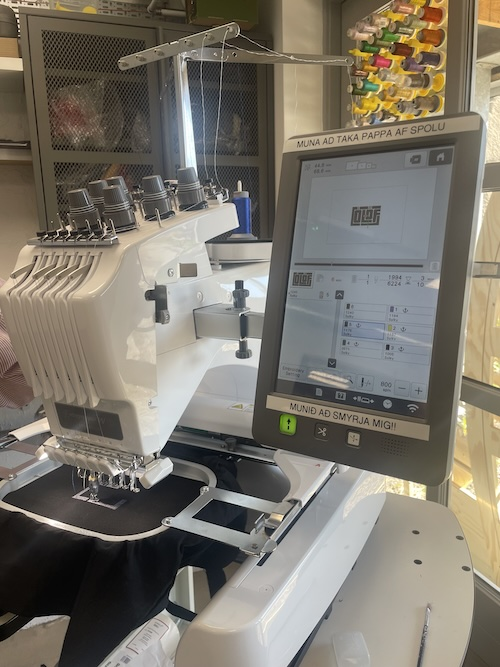